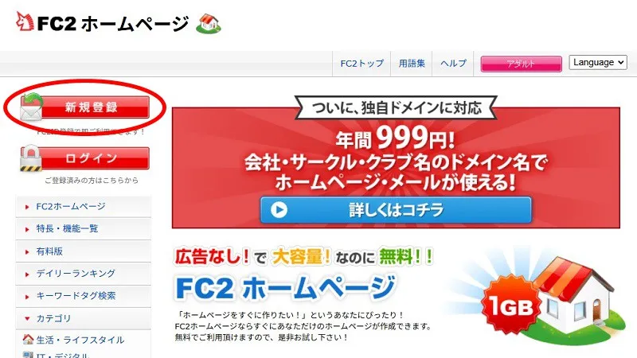
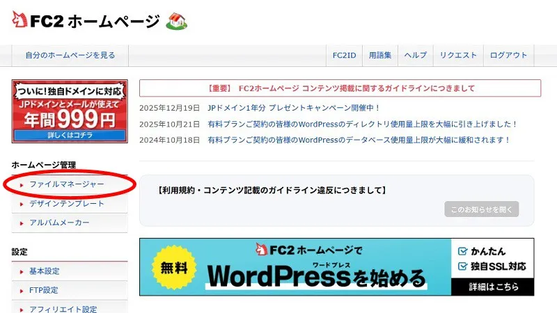
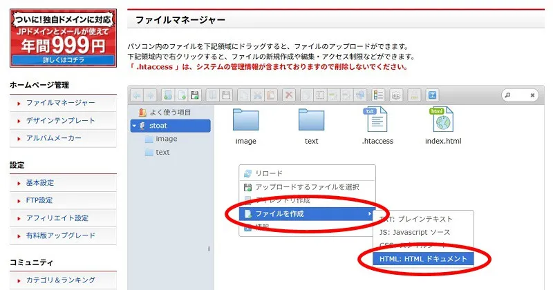
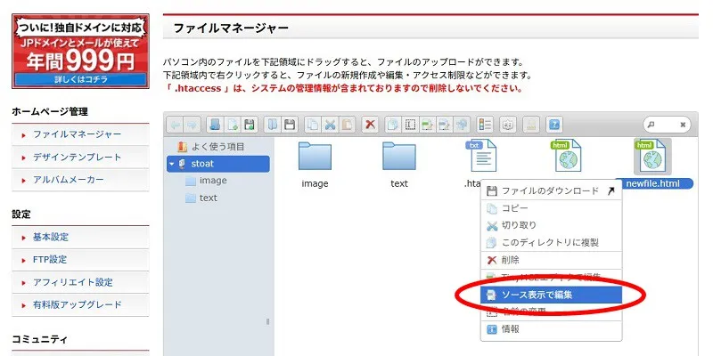
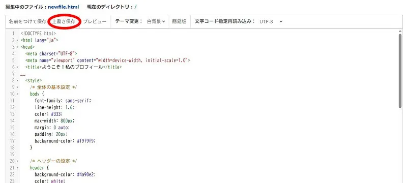
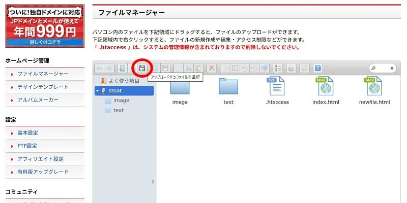
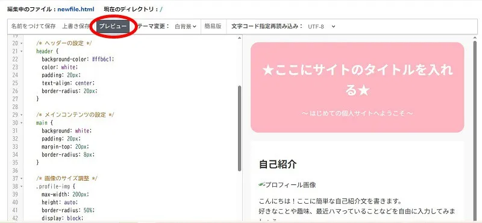

エディタもFTPも不要！ブラウザひとつで自分のホームページを作ってみよう
Webサイト制作と聞くと「特別なソフト（エディタ）を入れたり、FTPソフトでファイルを転送したり…」と難しく感じてしまうかもしれません。
ですが、FC2ホームページの標準機能を使えば、ブラウザひとつで簡単に個人サイトを作成・公開できます！
このページでは、スクリーンショットで図解しながらWebサイトを作る手順を具体的に解説していきます🐾
FC2の公式サイトを開き、「新規登録」ボタンからFC2 IDを作成します。登録完了後、FC2ホームページの管理画面にログインします。

管理画面の左メニューにある「ファイルマネージャー」をクリックします。

ファイルマネージャーの画面上で右クリックをし、「ファイルを作成」を選択します。ファイル形式の選択画面が出たら「HTML」を選びます。

デフォルトで「newfile.html」と入力されているので、そのまま決定します。
index.html
というファイル名にする必要があります（それによってサーバーが自動的にトップページだと認識してくれます）作成された「newfile.html」を右クリックし、「ソース表示で編集」を選択します。別ウィンドウで編集画面が開きます。

<>の閉じ忘れがあると赤色で表示」「リアルタイムでプレビューできる機能」など、編集に便利な機能が付いています🐾
編集画面は最初は真っ白なので、使用したいテンプレートをコピーして貼り付けます。その後、左上の「上書き保存」を押していったん保存しておきましょう。

サイトに自分の好きな画像を掲載してみましょう。
ファイルマネージャー画面の左上にある 💾（フロッピーディスク）のアイコン をクリックします（マウスを重ねると「アップロードするファイルを選択」と表示されます）

ドロップエリアが表示されるので、パソコン内にある画像ファイル（例：profile.jpg）をドラッグ＆ドロップします。一覧に画像ファイルが追加されればアップロード完了です！
HTML編集画面に戻り、画像を表示しているコードを探します。
<img src="sample.png" alt="プロフィール画像" class="profile-img">src="..." ：
表示したい画像ファイルの名前を指定します。先ほどアップロードした画像ファイル名（例:
profile.jpg）に変更します。
<!-- 書き換え例 -->
<img src="profile.jpg" alt="プロフィール画像" class="profile-img">編集画面の上側にある「プレビュー」をクリックすると、現在の見映えを確認できます。全画面で確認したい場合はいったん「上書き保存」をし、該当ファイルをダブルクリックで開きましょう。

デザインや文章が完成したら、いよいよ世界中に公開しましょう！
編集画面の左上にある 「上書き保存」 をクリックします。
ファイルマネージャーに戻り、「newfile.html」を右クリックして
「名前を変更」 を選択し、index.html に変更します。
index.html と入力した結果 index.html.html という名前になってしまい、トップページとして正しく読み込まれないことがあります🐾
これで、あなたの個人サイトが公開されました！
保存したファイルをダブルクリックすると実際のページ開くので、正しく表示されるか確認してみましょう。
Ctrl + F5（Macは Cmd + Shift + R）今回はFC2のブラウザ機能のみで完結させましたが、自分のパソコンのエディタソフトで作成した場合も、出来上がったHTMLファイルを「手順5：画像のアップロード」と同じやり方でドラッグ＆ドロップすればWebページとして公開できます🐾
ホスティングサービスの機能によっては、特別なツールを使わなくてもブラウザの管理画面だけでWebサイトを作ることができます。
ぜひ自分だけの素敵なWebサイトを作ってみてくださいね🐾